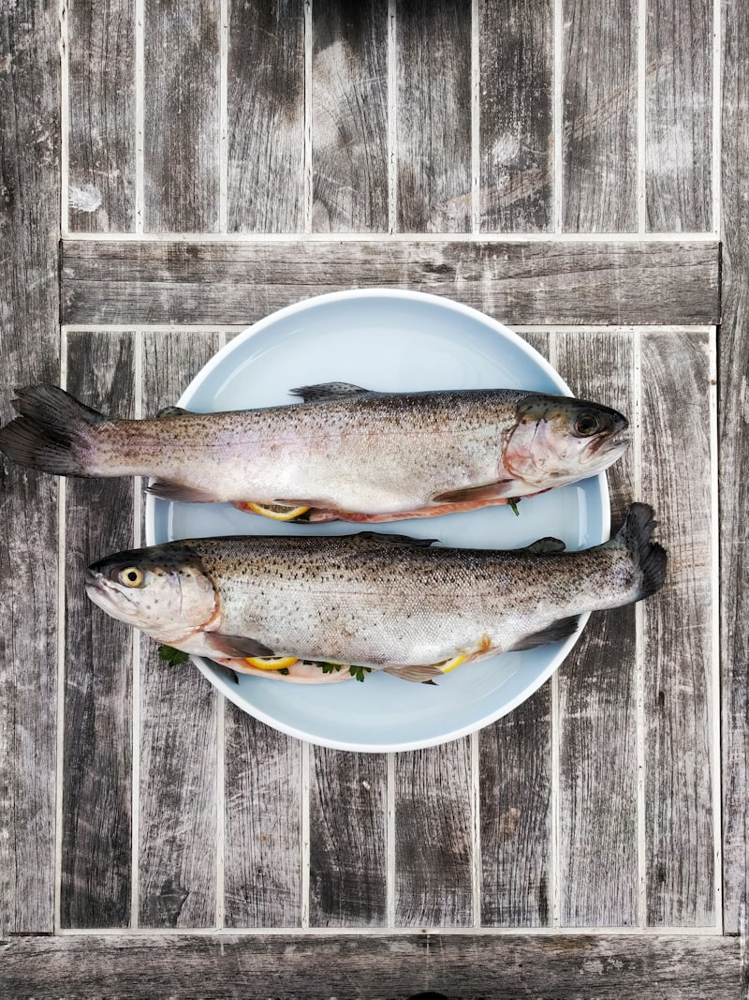

Mariscada da Casa
A grande travessa de marisco variado — percebes, amêijoas, camarão, sapateira e muito mais. O prato que define a Marisqueira de Ribamar.
EspecialidadeMarisco fresco, vista para o Atlântico,
sabores que ficam para sempre.
A nossa história
Situada na Estrada Nacional 247, a Marisqueira de Ribamar serve marisco da mais alta qualidade, directamente da costa atlântica para a sua mesa. O patrão, reconhecido pela sua empatia e dedicação à excelência das matérias-primas, recebe cada cliente como se fosse o primeiro.
Com vistas únicas para o pôr-do-sol sobre o Atlântico e uma cozinha que honra os sabores autênticos de Portugal, a Marisqueira de Ribamar tornou-se uma referência incontornável da gastronomia na região de Ericeira.
Marisco fresco do dia, cozinhado com técnica e amor à tradição portuguesa.


A Marisqueira de Ribamar situa-se na costa norte de Lisboa, entre Mafra e Ericeira, com vistas deslumbrantes sobre o Oceano Atlântico. O pôr-do-sol daqui é único — e o marisco ainda mais.
Estrada Nacional 247, 57 · 2640-027 Santo Isidoro, Mafra
"It is a place not to be missed for the quality of the raw materials and for the particular empathy and competence of the owner."
— Cliente verificado ★★★★★ via TripAdvisor
"This is by far the best meal I have ever had. The seafood was spectacular."
— Cliente verificado ★★★★★ via TripAdvisor
"Super friendly and professional service, amazing sunset views but more importantly some of the best seafood in town."
— Cliente verificado ★★★★★ via TripAdvisor